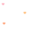
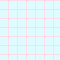
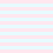
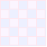
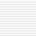
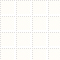

<?php
/**
 * 메인디자인설정
 */
include_once '../../Libs/_php/rankup_basic.class.php';
$rankup_control->check_admin();

include_once './top_menu.inc.php';
include_once '../../rankup_module/rankup_builder/attachment.class.php';
include_once './rankup_frame.class.php';
include_once './rankup_design.class.php';

$frame = new rankup_frame;
$design = new rankup_design;
$ds_rows = $design->get_settings('main_design');

if(!$ds_rows['bg_type']) $ds_rows['bg_type'] = 'none';
if(!$ds_rows['icon_qty']) $ds_rows['icon_qty'] = 2;
if(!$ds_rows['vertical_align']) $ds_rows['vertical_align'] = 'top';

?>

<?php
/**
 * 컬러픽커 로드
 *@usage: echo color_picker('name', 'value');
 *@usage: <script> color_picker.initialize('color_frame'); </script> // 컬러픽커 초기화
 */
include_once $base_dir.'Libs/_picker/color_picker.inc.php';
?>

<script type="text/javascript" src="../../rankup_module/rankup_builder/attachment.class.js"></script>
<script type="text/javascript"> var direct_board = true </script>
<script type="text/javascript" src="<?=$wysiwyg_url?>wysiwyg.js"></script>
<script type="text/javascript">
var change_frame = function(el) {
	var mode = [];
	el.checked = true;
	switch(el.value) {
		case 'none': mode = ['hide', 'hide', 'hide', 'hide', 'hide']; break;
		case 'color': mode = ['show', 'hide', 'hide', 'show', 'hide']; break;
		case 'skin': mode = ['hide', 'show', 'hide', 'show', 'hide']; break;
		case 'upload': mode = ['hide', 'hide', 'show', 'hide', 'show']; break;
		//
		case 'basic': mode = ['show', 'hide']; break;
		case 'self': mode = ['hide', 'show']; break;
	}
	if(el.name=='design_type') $w('basic_frame self_frame').each(function(frame, index) { $(frame)[mode[index]]() });
	else {
		$w('bg_color_frame bg_skin_frame bg_upload_frame main_bg_frame main_bg_preview_frame').each(function(frame, index) { $(frame)[mode[index]]() });
		if(el.value=='color') {
			$w('main_bg_type_solid main_bg_type_gradient').each(function(item) {
				if($(item).checked) {
					main_bg.color($(item));
					throw $break;
				}
			});
		}
		else if(el.value=='skin') {
			var _skin = $F('main_bg_skin');
			if(_skin) main_bg.skin(_skin);
		}
	}
}
</script>
<style type="text/css">
div.preview {
	width: 712px;
	*width: 734px;
	height: 150px;
	overflow: auto;
	padding: 10px;
	border: 1px #dedede solid;
	margin-top: -1px;
	background-color: #f7f7f7;
	scrollbar-highlight-color: #CCCCCC;
	scrollbar-shadow-color: #CCCCCC;
	scrollbar-arrow-color: #AAAAAA;
	scrollbar-face-color: #F4F3F0;
	scrollbar-3dlight-color: #FFFFFF;
	scrollbar-darkshadow-color: #FFFFFF;
	scrollbar-track-color: #FFFFFF;
}
#viewer {
	position: absolute;
	padding: 8px;
	background-color: white;
	border: 1px #dedede solid;
	margin: 0 5px;
}
</style>

<iframe name="post_frame" src="about:blank" style="width:100%;height:0px" frameborder="0"></iframe>

<center>
<div style="width:750px;text-align:left">

	<form name="save_form" onSubmit="return false">

	<div id="sub_title">메인페이지 설정</div>
	<table width="100%" align="center" cellpadding="7" cellspacing="1" border="0" bgcolor="#d7d7d7" class="list_top" style="table-layout:fixed">
	<colgroup bgcolor="white">
		<col width="134" />
		<col />
	</colgroup>
	<tr>
		<td class="gray_bg"> 메인페이지 사용</td>
		<td>
			<input type="radio" name="main_use" checked value="yes" id="main_use_yes"><label for="main_use_yes">사용함</label>
			<input type="radio" name="main_use"<? if($ds_rows['main_use']=='no') echo ' checked' ?> value="no" id="main_use_no"><label for="main_use_no">사용안함</label>
			<span id="tip">메인페이지를 사용안함으로 설정하시면 <b style="color:#3366cc">첫번째 메뉴 페이지</b>가 열립니다.</span>
		</td>
	</tr>
	<tr>
		<td class="gray_bg"> 메인배경 설정</td>
		<td>
			<input type="radio" name="bg_type" checked value="none" id="bg_type_none" onClick="change_frame(this)"><label for="bg_type_none">배경없음</label>
			<input type="radio" name="bg_type" value="color" id="bg_type_color" onClick="change_frame(this)"><label for="bg_type_color">배경색</label>
			<input type="radio" name="bg_type" value="skin" id="bg_type_skin" onClick="change_frame(this)"><label for="bg_type_skin">배경스킨</label>
			<input type="radio" name="bg_type" value="upload" id="bg_type_upload" onClick="change_frame(this)"><label for="bg_type_upload">이미지업로드</label>
		</td>
	</tr>
	<tr id="bg_color_frame" style="display:none">
		<td class="gray_bg"> 배경색상 설정</td>
		<td>
			<table width="100%" align="center" cellpadding="7" cellspacing="1" border="0" bgcolor="#d7d7d7">
			<tr>
				<td width="90" class="gray_bg"><input type="radio" name="main_bg_type" checked value="solid" id="main_bg_type_solid" onClick="main_bg.color(this)"><label for="main_bg_type_solid">단색</label></td>
				<td bgcolor="white">
					<?=color_picker('main_bg_scolor', $ds_rows['main_bg_scolor'], 'main_bg.color')?>
				</td>
			</tr>
			<tr>
				<td class="gray_bg"><input type="radio" name="main_bg_type"<? if($ds_rows['main_bg_type']=='gradient') echo ' checked' ?> value="gradient" id="main_bg_type_gradient" onClick="main_bg.color(this)"><label for="main_bg_type_gradient">그라데이션</label></td>
				<td bgcolor="white">
					<select id="main_bg_gtype" name="main_bg_gtype" onChange="main_bg.color(this)">
					<option value="height">상하</option>
					<option value="width"<? if($ds_rows['main_bg_gtype']=='width') echo ' selected' ?>>좌우</option>
					</select>
					<?=color_picker('main_bg_gcolor1', $ds_rows['main_bg_gcolor1'], 'main_bg.color')?> &nbsp; ~&nbsp;
					<?=color_picker('main_bg_gcolor2', $ds_rows['main_bg_gcolor2'], 'main_bg.color')?>
				</td>
			</tr>
			</table>
		</td>
	</tr>
	<tr id="bg_skin_frame" style="display:none">
		<td class="gray_bg"> 배경스킨 선택</td>
		<td>
			<input type="hidden" id="main_bg_skin" name="main_bg_skin" value="<?=$ds_rows['main_bg_skin']?>" />
			<table width="100%" align="center" cellpadding="7" cellspacing="0" border="1" bordercolor="#d7d7d7" class="table1">
			<tr>
				<td style="padding:0">
					<table width="100%" cellpadding="5" cellspacing="0" border="1" bordercolor="#dedede" class="table1" frame="void">
					<col width="20%" span="5" />
					<tr align="center">
						<td><a onclick="main_bg.skin('1')"></a></td>
						<td><a onclick="main_bg.skin('2')"></a></td>
						<td><a onclick="main_bg.skin('3')"></a></td>
						<td><a onclick="main_bg.skin('4')"></a></td>
						<td><a onclick="main_bg.skin('5')"></a></td>
					</tr>
					<tr align="center">
						<td><a onclick="main_bg.skin('6')"></a></td>
						<td><a onclick="main_bg.skin('7')"></a></td>
						<td><a onclick="main_bg.skin('8')"></a></td>
						<td><a onclick="main_bg.skin('9')"></a></td>
						<td><a onclick="main_bg.skin('10')"></a></td>
					</tr>
					</table>
				</td>
			</tr>
			</table>
		</td>
	</tr>
	<tr id="bg_upload_frame" style="display:none">
		<td bgcolor="#f4f4f4"> 이미지 업로드</td>
		<td>
			<?php
			$attach = new attachment('main_bg', $mobile->m_dir.'builder/');
			?>
			<span><input type="file" name="_attach_" hname="이미지" filter="jpg,gif,png" onChange="main_bg.post(this, 'attach')"></span>
			<span id="tip">( 제한크기 : 최대 <b style="letter-spacing:0"><?=$attach->configs['limit_size']?></b> )</span>
			<input type="hidden" id="on_main_bg" name="on_main_bg" />
			<input type="hidden" face="attach" name="mode" value="post_attach" disabled />
			<input type="hidden" face="attach" name="kind" value="main_bg" disabled />
			<input type="hidden" face="attach" name="handler" value="main_bg.draw" disabled />
		</td>
	</tr>
	<tr id="main_bg_frame">
		<td colspan="2" align="center">
			<div id="preview" class="preview"></div>
		</td>
	</tr>
	<tr id="main_bg_preview_frame" style="display:none">
		<td colspan="2" align="center">
			<div id="main_bg_preview" class="preview"<? echo $attach->preview($ds_rows['main_bg'], array('image' => ' style="background: url(\'{:folder:}{:name:}\');"')); ?>></div>
		</td>
	</tr>
	<tr>
		<td class="gray_bg"> 디자인 형태</td>
		<td>
			<input type="radio" name="design_type" checked value="basic" id="design_type_basic" onClick="change_frame(this)"><label for="design_type_basic">기본디자인</label>
			<input type="radio" name="design_type" value="self" id="design_type_self" onClick="change_frame(this)"><label for="design_type_self">사용자제작</label>
		</td>
	</tr>
	<tbody id="basic_frame">
	<tr>
		<td class="gray_bg"> 퀵메뉴 설정</td>
		<td>
			<table width="100%" cellpadding="7" cellspacing="0" border="1" bordercolor="#dedede" class="table1" style="table-layout:fixed">
			<col width="145" />
			<col />
			<tr>
				<td class="gray_bg"> 퀵메뉴 아이콘 배치</td>
				<td>
					<select id="icon_qty" name="icon_qty">
					<option value="2">2</option>
					<option value="3">3</option>
					<option value="4">4</option>
					</select>
					개씩
					<span id="tip">한줄에 출력될 메뉴아이콘 개수를 설정합니다.</span>
				</td>
			</tr>
			<tr>
				<td class="gray_bg"> 퀵메뉴 아이콘 위치</td>
				<td>
					<select id="vertical_align" name="vertical_align">
					<option value="top">상단</option>
					<option value="middle">중간</option>
					<option value="bottom">하단</option>
					</select>
					<span id="tip">퀵메뉴 영역의 세로 위치를 설정합니다.</span>
				</td>
			</tr>
			<tr>
				<td class="gray_bg"> 퀵메뉴 아이콘 간격</td>
				<td>
					가로 : <input type="text" name="col_interval" value="<?=$ds_rows['col_interval']?>" hname="아이콘 가로간격" option="number" size="5" maxlength="3" class="simpleform" /> 픽셀<br />
					세로 : <input type="text" name="row_interval" value="<?=$ds_rows['row_interval']?>" hname="아이콘 세로간격" option="number" size="5" maxlength="3" class="simpleform" /> 픽셀
				</td>
			</tr>
			<tr>
				<td class="gray_bg"> 퀵메뉴 출력 형태</td>
				<td>
					<input type="radio" name="icon_type" checked value="both" id="icon_type_both"><label for="icon_type_both">아이콘+텍스트</label>
					<input type="radio" name="icon_type"<? if($ds_rows['icon_type']=='image') echo ' checked' ?> value="image" id="icon_type_image"><label for="icon_type_image">아이콘</label>
				</td>
			</tr>
			<tr>
				<td class="gray_bg"> 퀵메뉴 출력 설정</td>
				<td>
					<div id="tip" style="margin: 5px 0"> 아이콘의 크기는 가로·세로 <b style="color:#3366cc">66 픽셀</b> 고정이며, 가장자리 곡률(Radious)은 <b style="color:#3366cc">12 픽셀</b> 입니다.</div>
					<table width="100%" align="center" cellpadding="7" cellspacing="0" border="1" bordercolor="#d7d7d7" class="table1" style="table-layout: fixed">
					<col width="40" />
					<col width="180" />
					<col width="80" />
					<col />
					<tr bgcolor="#eeeeee" align="center">
						<td>출력</td>
						<td>메뉴명</td>
						<td>파일업로드</td>
						<td>이미지보기</td>
					</tr>
					<?php
					// 프레임 로드
					$attach = new attachment('quick_icon', $mobile->m_dir.'builder/');
					$folder = $attach->configs['save']['folder'];
					echo $frame->print_frames(array(
						'attach_kind' => 'quick_icon',
						'pids' => $ds_rows['quick_pids'],
						'attaches' => $ds_rows['quick_icons'],
						'entry' => array(
							0 => '
							<tr>
								<td colspan="4" align="center" onMouseOver="this.bgColor=\'red\';this.style.color=\'white\'" onMouseOut="this.bgColor=\'white\';this.style.color=\'red\'" style="color:red">먼저 메뉴를 생성하시기 바랍니다. <b>[ <a href="./frame.html" style="letter-spacing:-1px">메뉴및페이지 설정 바로가기</a> ]</b></td>
							</tr>',
							1 => '
							<tr>
								<td class="gray_bg" align="center"><input type="checkbox" name="pids[]" value="{:no:}"{:on_checked:} /></td>
								<td class="gray_bg">{:base_name:}</td>
								<td align="center"><a onClick="uploader.open(\'quick_icon\', \'{:base_name:}\', \'on_icons[{:no:}]\', {:no:})"></a></td>
								<td><input type="hidden" class="on_item" name="on_icons[{:no:}]" />{:on_attach:}</td>
							</tr>'
						),
						'on_checked' => ' checked',
						'on_attach' => '<a onMouseOver="uploader.preview(this)" onMouseOut="uploader.preview_close()" folder="'.$folder.'" name="{:name:}"></a>'
					), '', 1, 'yes');
					?>
					</table>
				</td>
			</tr>
			</table>
		</td>
	</tr>
	</tbody>
	</table>

	<div id="self_frame" style="margin-top:10px;display:none">
		<textarea type="editor" name="main_content" style="width:100%;height:300px;" nofocus><?=$design->get_settings('main_content')?></textarea>
	</div>

	</form>

	<div style="margin-top:10px;text-align:center">
		<a onClick="$form.submit(this, 'save_form', '설정하신 사항을 저장하시겠습니까?')"></a>
	</div>

	<script type="text/javascript" src="../../rankup_module/rankup_builder/uploader.class.js"></script>
	<style type="text/css"> @import url('../../rankup_module/rankup_builder/uploader.css'); </style>
	<!-- FILE UPLOADER -->
	<div id="uploader_frame" style="display: none">
		<form name="post_frame" method="POST" onSubmit="return false">
			<dl class="titlebar">
				<dt>+ 파일업로더 +</dt>
				<dd><a onClick="uploader.close()">×</a></dd>
			</dl>
			<div class="item_wrap">
				<dl class="item">
					<dt>메뉴</dt>
					<dd id="base_name"></dd>
				</dl>
				<dl class="item">
					<dt>파일</dt>
					<dd style="padding:0">
						<span><input type="file" name="_attach_" onChange="uploader.post(this, 'attach2')" /></span>
						<input type="hidden" face="attach2" name="mode" value="post_attach" disabled />
						<input type="hidden" face="attach2" name="kind" value="" disabled />
						<input type="hidden" face="attach2" name="handler" value="uploader.draw" disabled />
					</dd>
				</dl>
			</div>
		</form>
		<div class="clear" style="margin-top:10px;"></div>
		<div id="uploader_preview" class="preview"></div>
		<div class="clear" style="margin-top:10px;text-align: center">
			<a onClick="uploader.apply()"></a>
			<a onClick="uploader.close()"></a>
		</div>
	</div>
	<!-- FILE UPLOADER -->

	<script type="text/javascript">
	//<![CDATA[
	Wysiwyg.createELM();
	color_picker.initialize('bg_color_frame');
	uploader.initialize('uploader_frame', 'save_form');

	// 메인배경 정의
	var main_bg = {
		post: attachment.post,
		post_reset: attachment.reset,
		draw: function(infos) {
			with(infos) {
				$('on_main_bg').value = name;
				$('main_bg_preview').setStyle({backgroundImage: 'url('+ domain + folder + name +')'});
			}
		},
		skin: function(num) {
			$('preview').setStyle({
				filter: '',
				background: 'url(../design/site/bg_'+ num +'.gif)'
			});
			$('main_bg_skin').value = num;
		},
		color: function(el) {
			var preview = $('preview');
			if(el.target) el = el.target.obj; // color_picker
			if(el.name=='main_bg_scolor' || el.value=='solid') { // 단색
				preview.setStyle({ filter: '', background: '', backgroundColor: $F('main_bg_scolor') });
				$('main_bg_type_solid').checked = true;
			}
			else { // 그라데이션
				var gtype = $F('main_bg_gtype')=='height' ? 0 : 1;
				var color1 = $F('main_bg_gcolor1'), color2 = $F('main_bg_gcolor2');
				if(Prototype.Browser.IE) preview.setStyle({ filter: 'progid:DXImageTransform.Microsoft.Gradient(GradientType='+ gtype +', StartColorStr='+ color1 +', EndColorStr='+ color2 +')' });
				else if(Prototype.Browser.Gecko) preview.setStyle({ background: '-moz-linear-gradient('+ (gtype?'left':'top') +', '+ color1 +', '+ color2 +')' });
				else preview.setStyle({ background: '-webkit-gradient(linear, 0% 0%, '+ (gtype?'100% 0%':'0% 100%') +', from('+ color1 +'), to('+ color2 +'))' });
				$('main_bg_type_gradient').checked = true;
			}
		}
	}

	/* $form setting */
	$form.debug = false;
	$form.hashes = {mode: 'save_design', kind: 'main'};
	$form.handler = function(trans) {
		var items = trans.responseXML.getElementsByTagName('item');
		$A(items).each(function(item) {
			var infos = {}
			$w('no folder name').each(function(field) {
				infos[field] = item.getElementsByTagName(field)[0].firstChild.nodeValue;
			});
			with(infos) {
				var el = $('save_form').select('input[name="on_icons['+ no +']"]')[0];
				if(el) el.value = ''; // reset
			}
			if(el && infos.name) uploader.preview_button(el, infos);
		});
		$('on_main_bg').value = '';
		alert('저장되었습니다.');
	}

	change_frame($('bg_type_<?=$ds_rows['bg_type']?>'));
	change_frame($('design_type_<?=$ds_rows['design_type']?>'));
	$('icon_qty').value = "<?=$ds_rows['icon_qty']?>";
	$('vertical_align').value = "<?=$ds_rows['vertical_align']?>";

	//]]>
	</script>

</div>
</center>
<br />
<br />

</body>
</html>